<!DOCTYPE lake>
<h1 data-lake-id="QlWFS" id="QlWFS"><span data-lake-id="ud0b61bf6" id="ud0b61bf6" style="color: rgb(51, 51, 51)">vmware安装</span></h1><h2 data-lake-id="AqfZm" id="AqfZm"><span data-lake-id="u64b2d8f2" id="u64b2d8f2" style="color: rgb(51, 51, 51)">1. 准备文件</span></h2><p data-lake-id="u4ae5ad61" id="u4ae5ad61"><span class="lake-fontsize-12" data-lake-id="u32b6c1dd" id="u32b6c1dd" style="color: rgb(51, 51, 51)"> </span><span class="lake-fontsize-12" data-lake-id="ub79ff591" id="ub79ff591" style="color: rgb(51, 51, 51)">双击安装文件，启动安装</span></p><p data-lake-id="u60c3ad56" id="u60c3ad56"></p><h2 data-lake-id="fH764" id="fH764"><span data-lake-id="u3c338fd8" id="u3c338fd8" style="color: rgb(51, 51, 51)">2. 安装</span></h2><p data-lake-id="uc5cb6bc0" id="uc5cb6bc0"><strong><span class="lake-fontsize-12" data-lake-id="u68d5b649" id="u68d5b649" style="color: rgb(51, 51, 51)">点击下一步</span></strong></p><p data-lake-id="uc508beab" id="uc508beab"></p><p data-lake-id="u16b52d9a" id="u16b52d9a"><strong><span class="lake-fontsize-12" data-lake-id="u0a3ae184" id="u0a3ae184" style="color: rgb(51, 51, 51)">勾选同意，点击下一步</span></strong></p><p data-lake-id="u61dd48b6" id="u61dd48b6">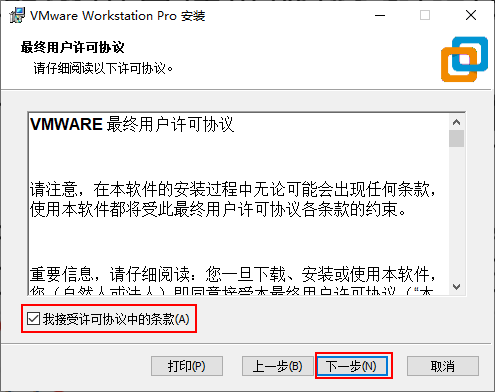</p><p data-lake-id="uec3cc2f5" id="uec3cc2f5"><strong><span class="lake-fontsize-12" data-lake-id="u8cc2aa72" id="u8cc2aa72" style="color: rgb(51, 51, 51)">选择安装位置</span></strong></p><p data-lake-id="uf9b8fc56" id="uf9b8fc56"><strong><span class="lake-fontsize-12" data-lake-id="u7945b006" id="u7945b006" style="color: rgb(51, 51, 51)">注意：虽然安装位置可以自由选择，但是由于虚拟机对硬件要求较高，如果当前计算机有固态硬盘，建议安装到固态硬盘。</span></strong></p><p data-lake-id="uadcbdaca" id="uadcbdaca">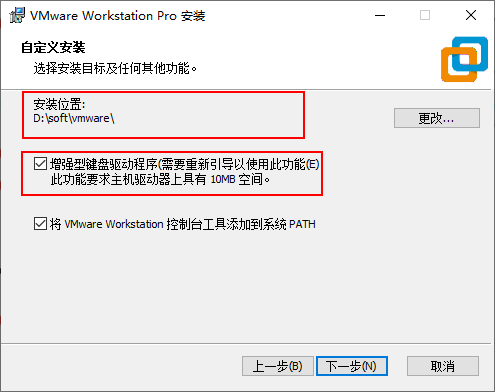</p><p data-lake-id="u7f1009be" id="u7f1009be"><strong><span class="lake-fontsize-12" data-lake-id="u56c99d59" id="u56c99d59" style="color: rgb(51, 51, 51)">把默认的勾选取消，点击下一步</span></strong></p><p data-lake-id="ua1f35a60" id="ua1f35a60">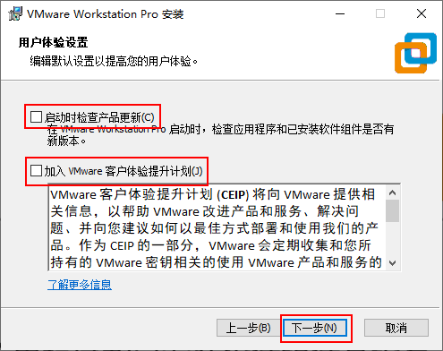</p><p data-lake-id="u23cfa08c" id="u23cfa08c"><strong><span class="lake-fontsize-12" data-lake-id="u87f85c0b" id="u87f85c0b" style="color: rgb(51, 51, 51)">继续点击下一步</span></strong></p><p data-lake-id="ua66b90eb" id="ua66b90eb"></p><p data-lake-id="ufd8c8612" id="ufd8c8612"><strong><span class="lake-fontsize-12" data-lake-id="udd30e667" id="udd30e667" style="color: rgb(51, 51, 51)">点击安装</span></strong></p><p data-lake-id="ua85bc1a0" id="ua85bc1a0">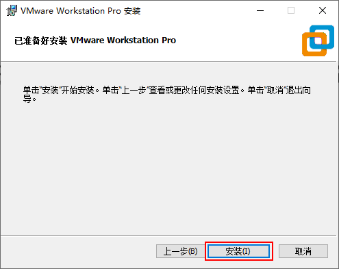</p><p data-lake-id="ue5182826" id="ue5182826"><strong><span class="lake-fontsize-12" data-lake-id="u5fd5ade7" id="u5fd5ade7" style="color: rgb(51, 51, 51)">等待安装结束，点击许可证</span></strong></p><p data-lake-id="uca81e2a4" id="uca81e2a4"></p><p data-lake-id="u65826a76" id="u65826a76"><strong><span class="lake-fontsize-12" data-lake-id="uf96a9e65" id="uf96a9e65" style="color: rgb(51, 51, 51)">输入许可证秘钥如下：点击输入 </span></strong></p><p data-lake-id="ub1d7c4bb" id="ub1d7c4bb"><span class="lake-fontsize-12" data-lake-id="uae830eed" id="uae830eed" style="color: rgb(51, 51, 51)">ZF3R0-FHED2-M80TY-8QYGC-NPKYF</span></p><p data-lake-id="u2273c1c1" id="u2273c1c1"></p><p data-lake-id="u3a719ea3" id="u3a719ea3"><strong><span class="lake-fontsize-12" data-lake-id="u2fb24122" id="u2fb24122" style="color: rgb(51, 51, 51)">点击完成，安装结束</span></strong></p><p data-lake-id="udbc6a512" id="udbc6a512">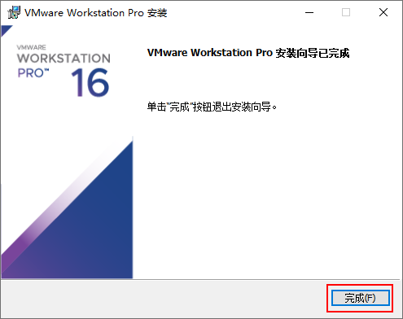</p><p data-lake-id="u9fddbf28" id="u9fddbf28"><strong><span class="lake-fontsize-12" data-lake-id="ua8228247" id="ua8228247" style="color: rgb(51, 51, 51)">VMware安装完成需要重启计算机才能正常使用，可选择立即重启或稍后手动重启</span></strong></p><p data-lake-id="uc8ecaee2" id="uc8ecaee2">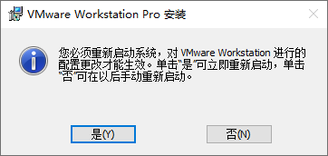</p><blockquote data-lake-id="ud4316606" id="ud4316606"><p data-lake-id="ud1ba5c73" id="ud1ba5c73"><span data-lake-id="u3cc4334b" id="u3cc4334b" style="color: #DF2A3F">如果打开虚拟机没反应,可以用管理员权限打开vmware,再输入许可证即可</span></p></blockquote><p data-lake-id="u49877d2f" id="u49877d2f"><br/></p><h1 data-lake-id="w69YV" id="w69YV"><span data-lake-id="u2f699301" id="u2f699301">Ubuntu系统安装</span></h1><h2 data-lake-id="W3meg" id="W3meg"><span data-lake-id="u1aad1d8d" id="u1aad1d8d" style="color: rgb(51, 51, 51)">方式1: 导入ubuntu虚拟机(推荐)</span></h2><h3 data-lake-id="VUBSf" id="VUBSf"><span data-lake-id="ua1942bc3" id="ua1942bc3" style="color: rgb(51, 51, 51)">1. 准备文件</span></h3><p data-lake-id="u3b7fb096" id="u3b7fb096"><span class="lake-fontsize-12" data-lake-id="u8fabf5b8" id="u8fabf5b8" style="color: rgb(51, 51, 51)">解压ubuntu虚拟机压缩文件(ubuntu22.zip)到非中文非空格目录下</span></p><p data-lake-id="ueef63445" id="ueef63445"><strong><span class="lake-fontsize-12" data-lake-id="u32844e2d" id="u32844e2d" style="color: rgb(51, 51, 51)">注意：虚拟机镜像文件夹会占用计算机40GB左右的硬盘空间，如果计算机配置有固态硬盘且空间充裕，建议将虚拟机文件夹放置在固态硬盘，这样能极大提升虚拟机运行的流畅度。</span></strong></p><h3 data-lake-id="fc6WU" id="fc6WU"><span data-lake-id="u8117589b" id="u8117589b" style="color: rgb(51, 51, 51)">2. 导入</span></h3><p data-lake-id="udf58660f" id="udf58660f"><strong><span class="lake-fontsize-12" data-lake-id="u27ea330f" id="u27ea330f" style="color: rgb(51, 51, 51)">打开VMware，界面如下：</span></strong></p><p data-lake-id="u92c571c3" id="u92c571c3">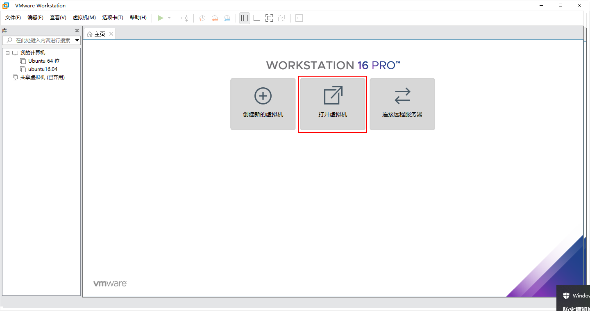</p><p data-lake-id="uadb8c8c6" id="uadb8c8c6"><strong><span class="lake-fontsize-12" data-lake-id="u43097e5d" id="u43097e5d" style="color: rgb(51, 51, 51)">点击打开虚拟机，找到解压的Ubuntu22.04镜像文件夹，选择ubunt 64位.vmx文件，点击打开</span></strong></p><p data-lake-id="uf70c7789" id="uf70c7789">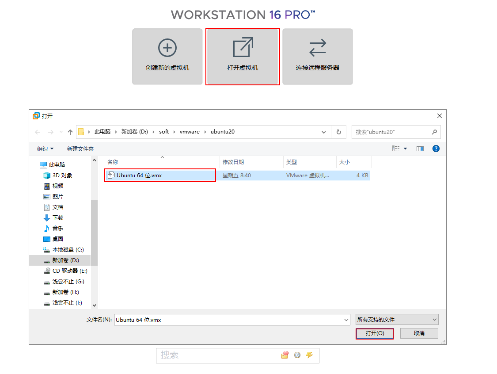</p><p data-lake-id="ua1f8ef15" id="ua1f8ef15"><strong><span class="lake-fontsize-12" data-lake-id="ua1a2063b" id="ua1a2063b" style="color: rgb(51, 51, 51)">由于虚拟机对内存容量和CPU数量要求较高，所以在打开虚拟机之前需要根据计算机硬件对分配给虚拟机的内存和CPU数量进行设置。如果计算机配置较高，即物理内存大于等于8G，CPU大于等于四核八线程，分配给虚拟机的内存设置为4GB即可，CPU内核总数设置为4个即可；如果计算机配置较低，分配给虚拟机的内存设置为2GB，CPU内核总数设置为1个。</span></strong></p><p data-lake-id="u6588ac1e" id="u6588ac1e"><strong><span class="lake-fontsize-12" data-lake-id="u8aa521fb" id="u8aa521fb" style="color: rgb(51, 51, 51)">修改虚拟机内存:</span></strong></p><p data-lake-id="u07efcd45" id="u07efcd45">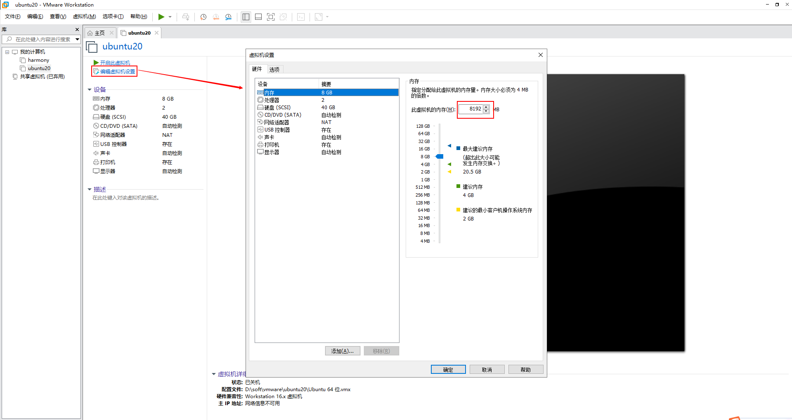</p><p data-lake-id="ufa361f30" id="ufa361f30"><strong><span class="lake-fontsize-12" data-lake-id="u6b9f1b6a" id="u6b9f1b6a" style="color: rgb(51, 51, 51)">修改虚拟机CPU核心数:</span></strong></p><p data-lake-id="udb15bdc0" id="udb15bdc0">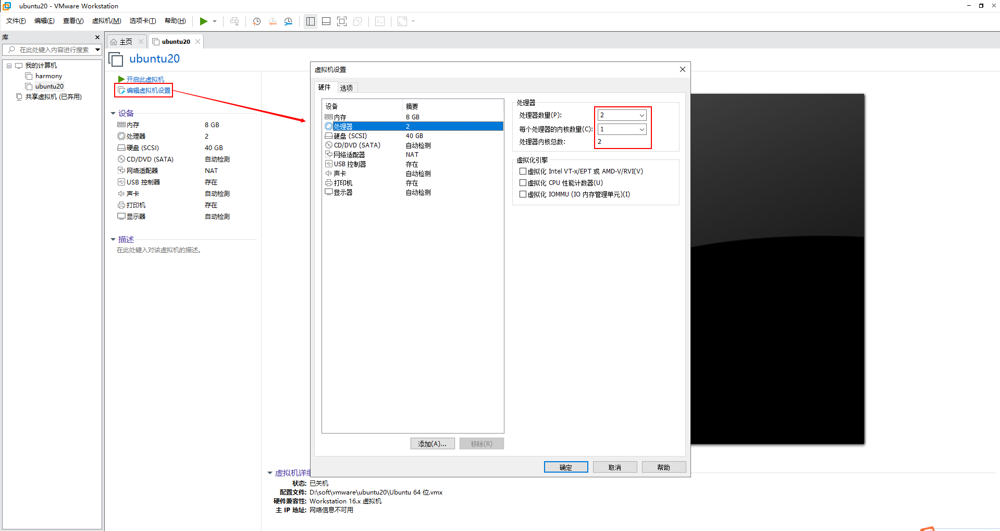</p><p data-lake-id="ufa426fb2" id="ufa426fb2"><strong><span class="lake-fontsize-12" data-lake-id="ufc7e5650" id="ufc7e5650" style="color: rgb(51, 51, 51)">设置完毕之后即点击开启此虚拟机可打开虚拟机，第一次打开虚拟机，速度会比较慢，需要耐心等待</span></strong></p><p data-lake-id="u95698d64" id="u95698d64">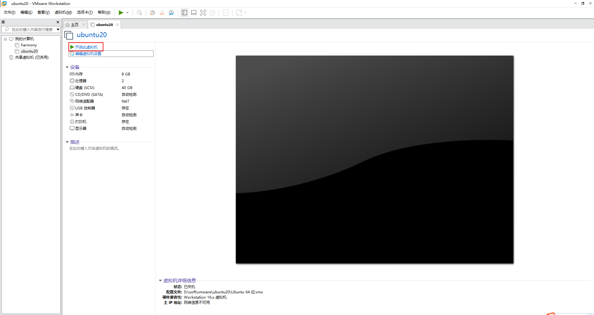</p><p data-lake-id="u123dac31" id="u123dac31"><span class="lake-fontsize-12" data-lake-id="u323e4ba8" id="u323e4ba8" style="color: rgb(51, 51, 51)">​</span><br/></p><p data-lake-id="u44396e49" id="u44396e49"><strong><span class="lake-fontsize-12" data-lake-id="ud200fce6" id="ud200fce6" style="color: rgb(51, 51, 51)">出现如下界面，点击头像，输入密码：123</span></strong></p><p data-lake-id="u5dcc2458" id="u5dcc2458">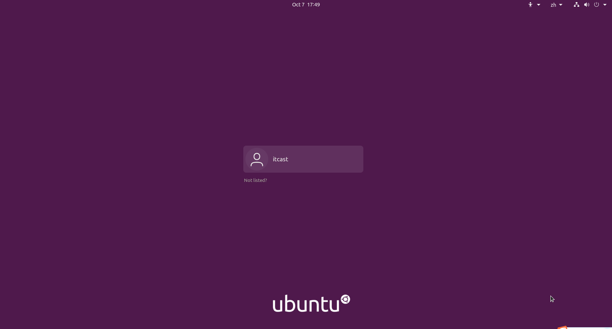</p><p data-lake-id="uf11d1ad0" id="uf11d1ad0">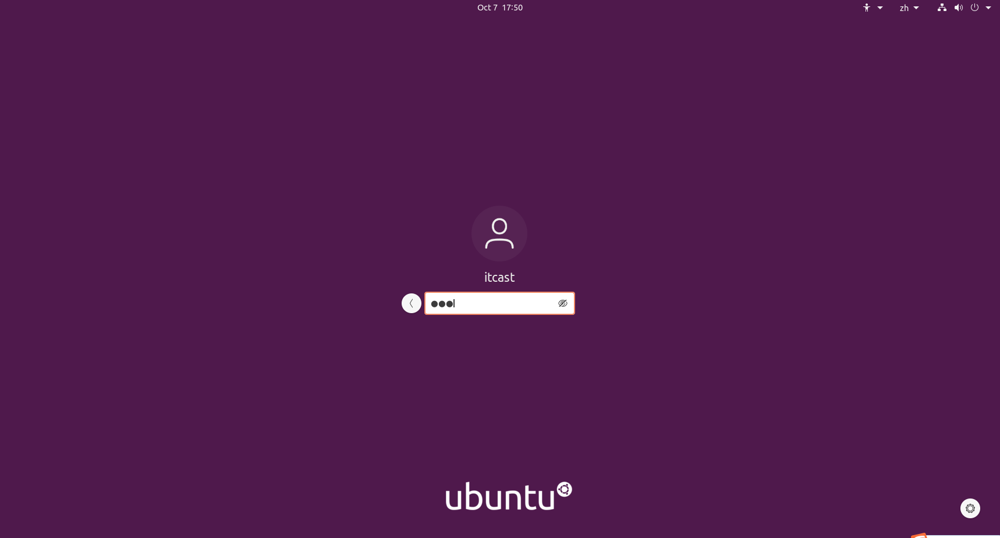</p><p data-lake-id="u8d96a689" id="u8d96a689"><strong><span class="lake-fontsize-12" data-lake-id="u85997646" id="u85997646" style="color: rgb(51, 51, 51)">出现如下界面，表明虚拟机导入并打开成功</span></strong></p><p data-lake-id="ufaddd55e" id="ufaddd55e">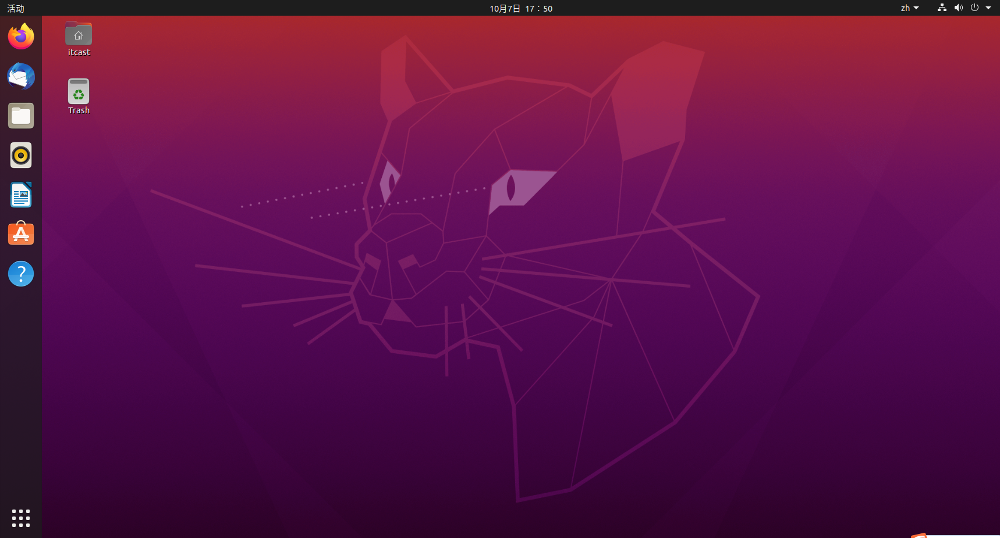</p><p data-lake-id="u8f286c36" id="u8f286c36"><br/></p><h2 data-lake-id="SHLpN" id="SHLpN"><span data-lake-id="u8fd45d5d" id="u8fd45d5d">方式二：使用官方镜像从零安装</span></h2><h3 data-lake-id="BKqvy" data-lake-index-type="0" id="BKqvy"><span data-lake-id="u54ee9d3a" id="u54ee9d3a">下载官方镜像</span></h3><p data-lake-id="u9af4012f" id="u9af4012f"><span class="lake-fontsize-12" data-lake-id="ucccdaf0f" id="ucccdaf0f" style="color: rgb(0,0,0)">从 </span><span class="lake-fontsize-12" data-lake-id="u1edd962b" id="u1edd962b" style="color: rgb(0,0,0)">Ubuntu </span><span class="lake-fontsize-12" data-lake-id="u1e9b4601" id="u1e9b4601" style="color: rgb(0,0,0)">官网找到虚拟机 </span><span class="lake-fontsize-12" data-lake-id="u07cd5db3" id="u07cd5db3" style="color: rgb(0,0,0)">ISO </span><span class="lake-fontsize-12" data-lake-id="u941b460e" id="u941b460e" style="color: rgb(0,0,0)">镜像，本教程以 </span><span class="lake-fontsize-12" data-lake-id="u133ca690" id="u133ca690" style="color: rgb(0,0,0)">Ubuntu22.04 </span><span class="lake-fontsize-12" data-lake-id="ue4837122" id="ue4837122" style="color: rgb(0,0,0)">版本为例。 </span></p><p data-lake-id="ua0f5b577" id="ua0f5b577"><span class="lake-fontsize-12" data-lake-id="u90f40d8c" id="u90f40d8c" style="color: rgb(0,0,255)">https://ubuntu.com/download/alternative-downloads#past-releases-and-other-flav </span></p><p data-lake-id="u2b291343" id="u2b291343"><span class="lake-fontsize-12" data-lake-id="ua39c3483" id="ua39c3483" style="color: rgb(0,0,255)">ours</span></p><p data-lake-id="ua6bebd6a" id="ua6bebd6a">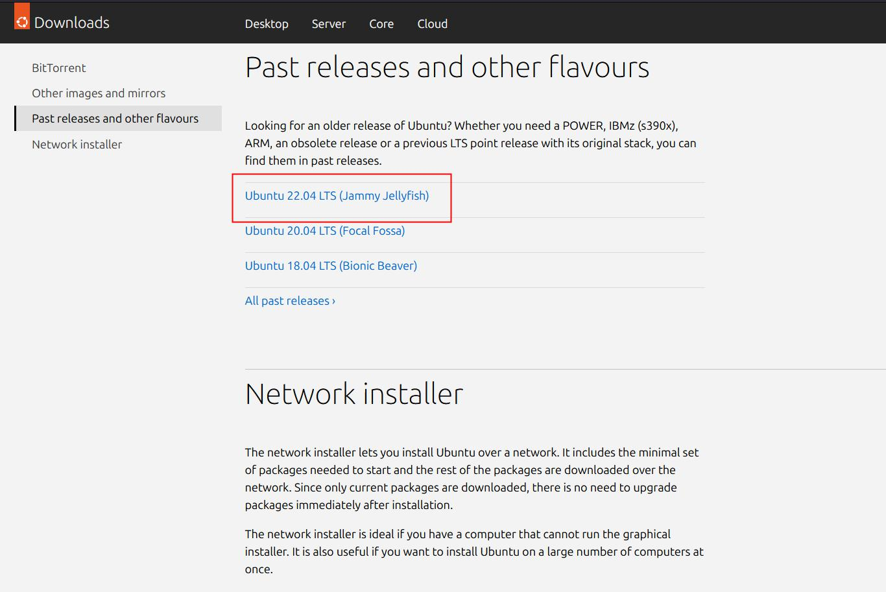</p><p data-lake-id="u1fbd19a8" id="u1fbd19a8"><span data-lake-id="udc4a2101" id="udc4a2101">下载虚拟机 ISO 镜像，官网下载慢属正常现象。选择 64-bit PC(AMD64) desktop image</span></p><p data-lake-id="u5b23a7c7" id="u5b23a7c7">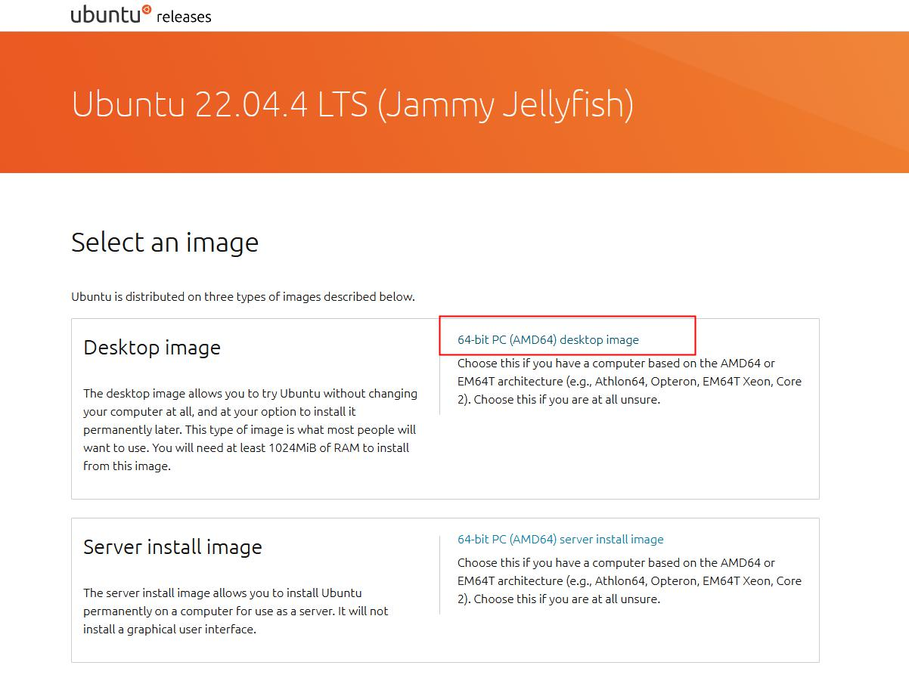</p><p data-lake-id="u49f01c5d" id="u49f01c5d"><span data-lake-id="ucbf66168" id="ucbf66168">​</span><br/></p><h3 data-lake-id="XREsY" data-lake-index-type="0" id="XREsY"><span data-lake-id="ucaaf8dcc" id="ucaaf8dcc">创建虚拟机</span></h3><p data-lake-id="u1c4d4753" id="u1c4d4753"><span data-lake-id="u1d442d81" id="u1d442d81">下载完成后打开虚拟机，点击创建新的虚拟机。</span></p><p data-lake-id="u2aba9217" id="u2aba9217">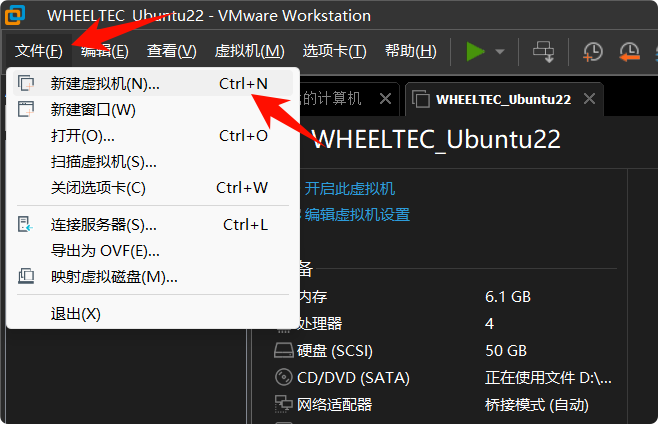</p><p data-lake-id="u0c6663ea" id="u0c6663ea"><span data-lake-id="u2bde2a17" id="u2bde2a17">默认选择【典型】，下一步</span></p><p data-lake-id="uac8e6432" id="uac8e6432">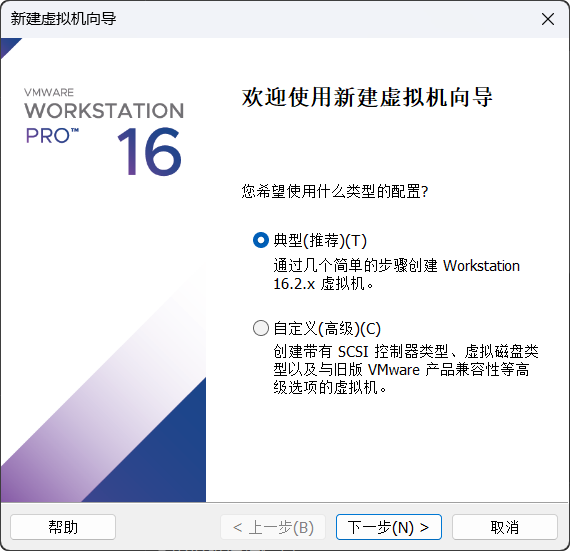</p><p data-lake-id="u0a97876d" id="u0a97876d"><span data-lake-id="u712b5c85" id="u712b5c85">选择准备好的 iso 文件，点击下一步</span></p><p data-lake-id="u97ee05e9" id="u97ee05e9">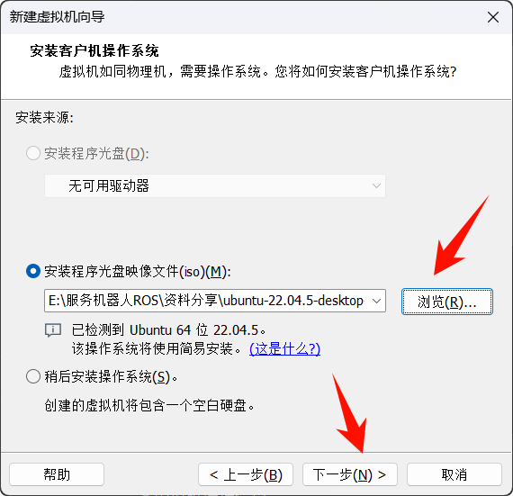</p><p data-lake-id="uc0a407c8" id="uc0a407c8">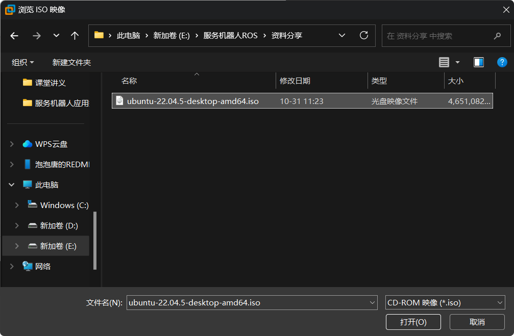</p><h3 data-lake-id="HDQ1s" data-lake-index-type="0" id="HDQ1s"><span data-lake-id="u17d4786f" id="u17d4786f">配置虚拟机</span></h3><p data-lake-id="u4a679d4d" id="u4a679d4d"><span data-lake-id="u17742403" id="u17742403">输入名字（用英文或拼音）和密码</span></p><p data-lake-id="udc097e51" id="udc097e51">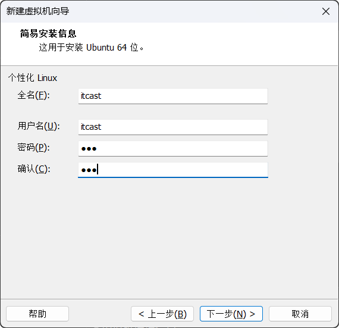</p><p data-lake-id="u055ffd37" id="u055ffd37"><span data-lake-id="ua1468add" id="ua1468add">新建一个文件夹“ubuntu22.04”并选择该目录</span></p><p data-lake-id="u13285e6e" id="u13285e6e">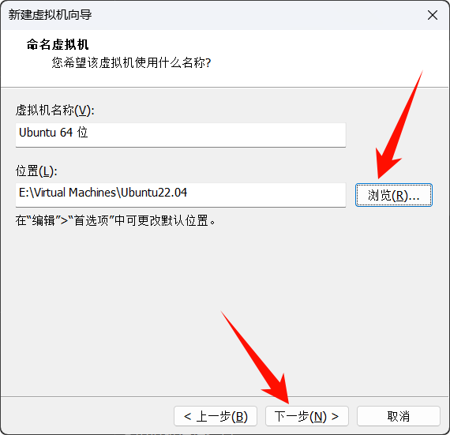</p><p data-lake-id="ud131c632" id="ud131c632"><span data-lake-id="ud27c64e2" id="ud27c64e2">将最大磁盘大小设置为 60G（初始不会占用这么多，根据自己硬盘大小调整），选择“将虚拟磁盘存储为单个文件。”</span></p><p data-lake-id="u12e2c0d2" id="u12e2c0d2">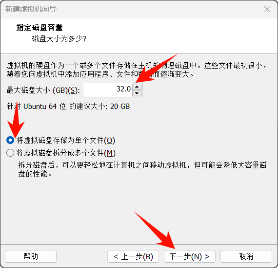</p><p data-lake-id="u7cd8db71" id="u7cd8db71"><span data-lake-id="u5c7807c6" id="u5c7807c6">点击完成</span></p><p data-lake-id="u7d077045" id="u7d077045">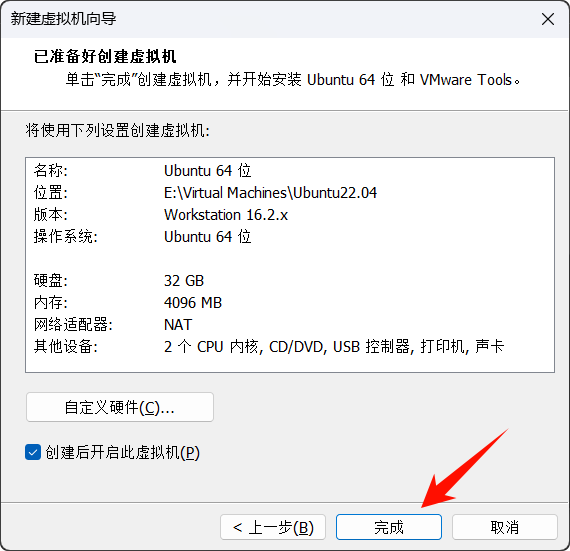</p><h3 data-lake-id="sAZWY" data-lake-index-type="0" id="sAZWY"><span data-lake-id="ua4dd0101" id="ua4dd0101">进行系统配置</span></h3><p data-lake-id="u3436d9af" id="u3436d9af"><span data-lake-id="u30d5ecb9" id="u30d5ecb9">Continue</span></p><p data-lake-id="u7878efbf" id="u7878efbf">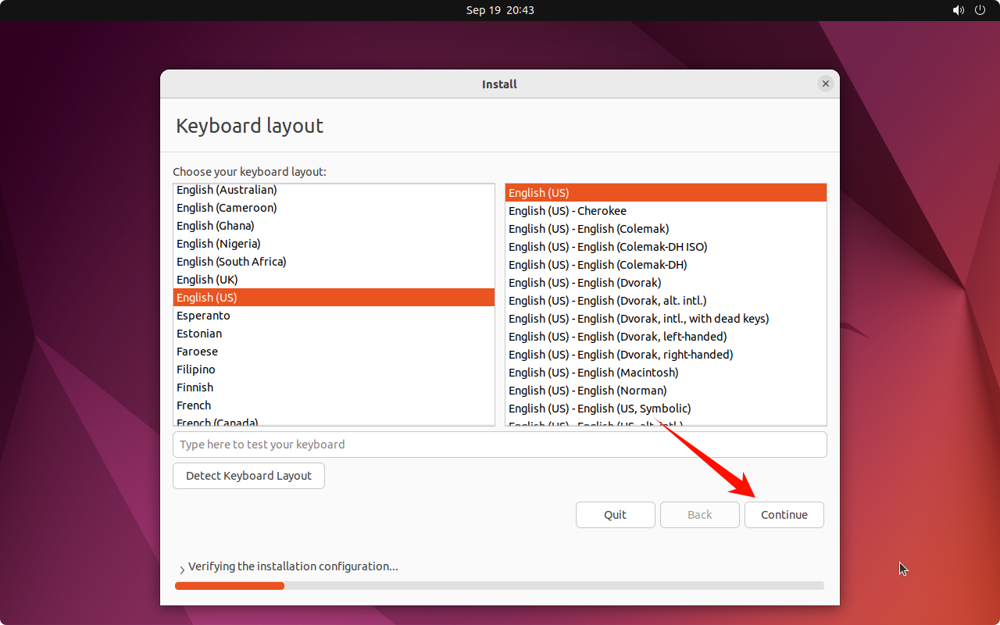</p><p data-lake-id="ud3508ed8" id="ud3508ed8"><span data-lake-id="ub4bbdcb8" id="ub4bbdcb8">Continue</span></p><p data-lake-id="u09fe27fb" id="u09fe27fb">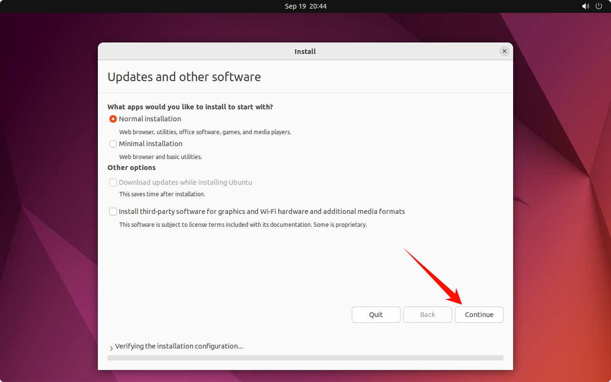</p><p data-lake-id="u011e9e8e" id="u011e9e8e"><span data-lake-id="ud053293c" id="ud053293c">Install Now</span></p><p data-lake-id="u5a379d4a" id="u5a379d4a">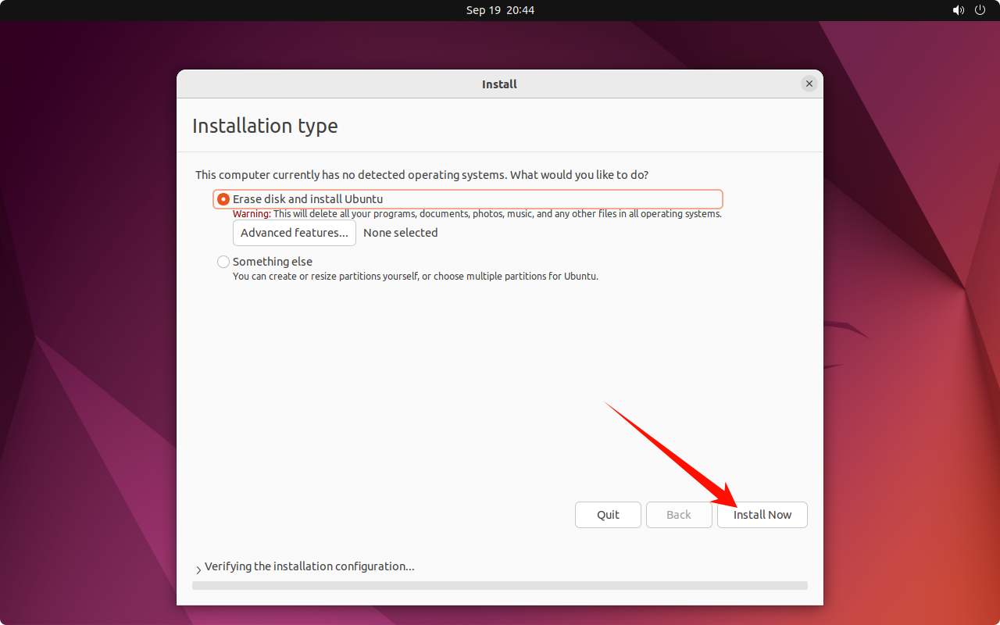</p><p data-lake-id="ub0c5727c" id="ub0c5727c"><span data-lake-id="u06b194dc" id="u06b194dc">Continue</span></p><p data-lake-id="u27bf337e" id="u27bf337e">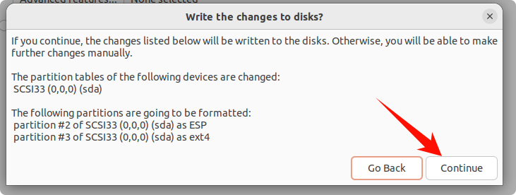</p><p data-lake-id="u20a11ab9" id="u20a11ab9"><span data-lake-id="ua4b80edc" id="ua4b80edc">点到 Shanghai 附近，continue</span></p><p data-lake-id="u367607bb" id="u367607bb">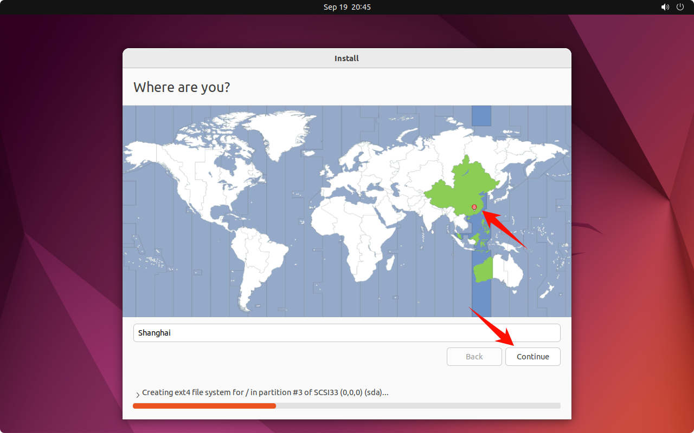</p><p data-lake-id="u6a87cf3a" id="u6a87cf3a"><span data-lake-id="u8c7dd5a9" id="u8c7dd5a9">输入用户名，密码，继续</span></p><p data-lake-id="u06849773" id="u06849773">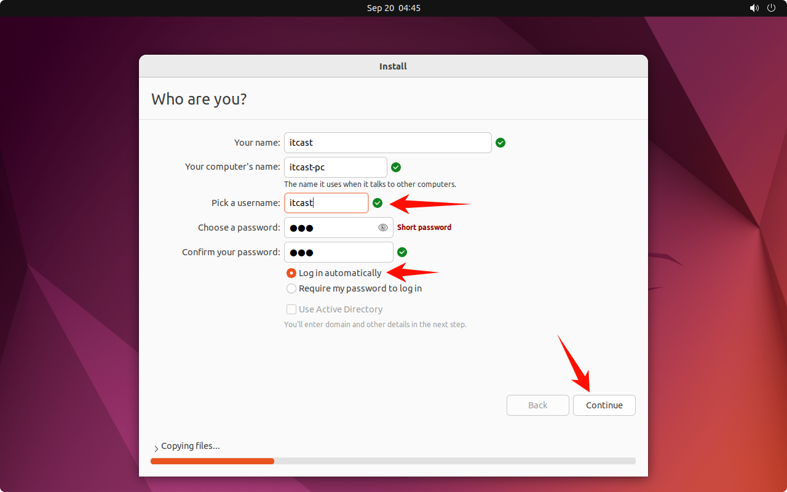</p><p data-lake-id="u6f3e16e1" id="u6f3e16e1"><span data-lake-id="u532f765d" id="u532f765d">安装完毕，点击 Restart Now 重启</span></p><p data-lake-id="ue84f71ae" id="ue84f71ae">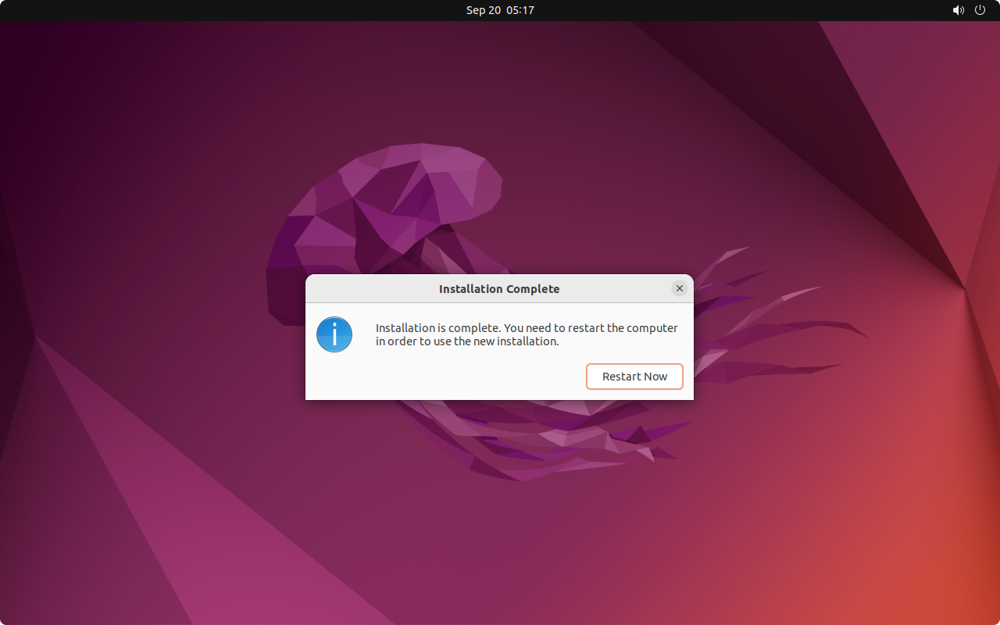</p><h1 data-lake-id="ffeUf" id="ffeUf"><span data-lake-id="u61625fe0" id="u61625fe0">问题处理</span></h1><h2 data-lake-id="LwRuP" id="LwRuP"><span data-lake-id="udbd8ddac" id="udbd8ddac">开启虚拟机报错"CPU不支持虚拟化"</span></h2><p data-lake-id="u6e2587c2" id="u6e2587c2"><span class="lake-fontsize-12" data-lake-id="u229822dd" id="u229822dd" style="color: rgb(51, 51, 51)">如果打开虚拟机的时候报CPU不支持虚拟化的错误，这个某些品牌的计算机的出厂设置有关，需要进入BIOS将CPU虚拟化选项打开，不同品牌的计算机BIOS都不相同，如果遇到这个问题，可以根据计算机型号百度解决方案</span></p><h2 data-lake-id="zxktK" id="zxktK"><span data-lake-id="u70b56015" id="u70b56015">窗口分辨率不能随拖拽变化</span></h2><p data-lake-id="ua9d39147" id="ua9d39147"><span data-lake-id="ue139d955" id="ue139d955">如果不能复制粘贴文件或分辨率不能随窗口变化，不能复制粘贴文字，可执行如下命令解决：</span></p><span class="yuque-card-unsupported">[codeblock]</span><blockquote class="lake-alert lake-alert-color3" data-lake-id="ue615b794" id="ue615b794"><p data-lake-id="u0b96b1a8" id="u0b96b1a8"><span data-lake-id="u0233a144" id="u0233a144">Linux命令行里进行文字的复制粘贴，需要用如下快捷键：</span></p><ul list="u64c724ff"><li data-lake-id="u1ca71ed7" fid="ubb08a44b" id="u1ca71ed7"><span data-lake-id="u92a678d7" id="u92a678d7">复制 Ctrl + Shift + C</span></li><li data-lake-id="u95fc5fe2" fid="ubb08a44b" id="u95fc5fe2"><span data-lake-id="u3105bd9a" id="u3105bd9a">粘贴 Ctrl + Shift + V</span></li></ul></blockquote>